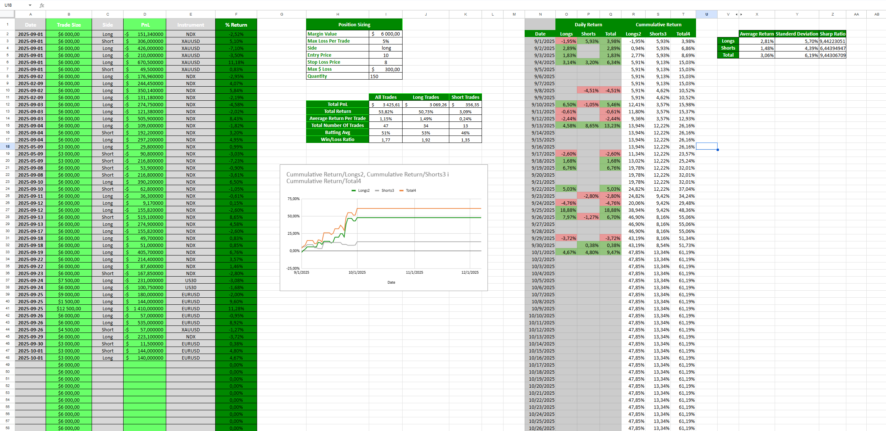
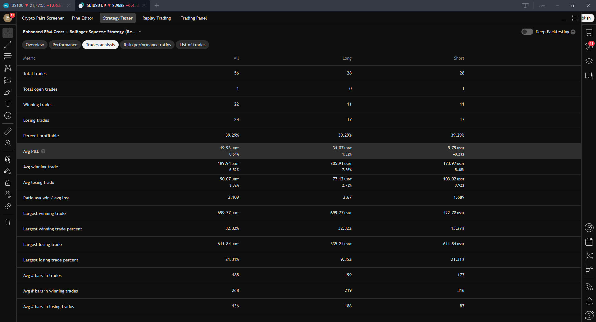
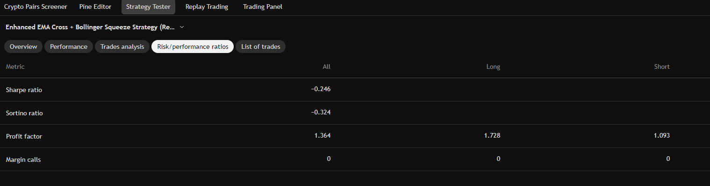
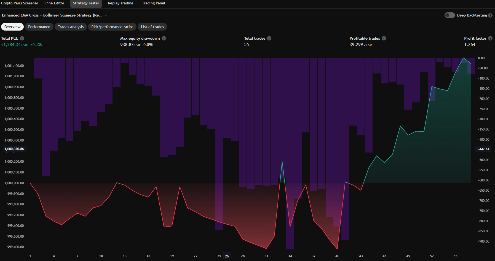

Finance CV
Finance CV
Projekt 1: Podstawowy monitor budżetowy w excelu
Opis: Używając prostych obliczeń matematycznych oblicza wydatki oraz przychody sumując każdy koniec miesiąca. Używając google cloud'a można połączyć to z prostym skryptem na komputerze, aby zautomatyzować proces dodawania wydatków.

Projekt 2: Prosta strategia Handlu na MEXC:SUI/USDT.P
Opis: Strategia była backtestowana na tradingview na instrumencie SUI/USDT. Zaliczyła całkiem dobry wynik, Z głównym profit factorem 1.364, przy RR 1:2(TimeFrame 15min). Strategia „Enhanced EMA Cross + Bollinger Squeeze" opiera się na przecięciach dwóch średnich wykładniczych (EMA 9 i EMA 21), które sygnalizują potencjalne wejście w pozycję. Opcjonalnie można włączyć filtr trendu oparty na długoterminowej EMA 200, aby grać tylko zgodnie z dominującym kierunkiem rynku. Dodatkowy warunek wejścia to tzw. Bollinger Squeeze, co może zwiastować zbliżający się ruch. Strategia wykorzystuje również filtry techniczne: RSI (wyklucza skrajne warunki rynku), ADX (sprawdza siłę trendu) oraz wolumen (porównanie z jego średnią). Pozycje są otwierane tylko wtedy, gdy spełnione są wszystkie aktywne filtry. Zarządzanie ryzykiem bazuje na wskaźniku ATR – na jego podstawie ustalane są poziomy stop loss i take profit, zgodnie z ustalonym stosunkiem RR(1:2). Wielkość pozycji jest dynamicznie obliczana w zależności od procenta kapitału, który chcemy ryzykować. Po osiągnięciu poziomu zysku równego ponoszonemu ryzyku (RR = 1:1), strategia automatycznie przesuwa stop loss do poziomu wejścia (break even). Można wybrać kierunek handlu (tylko long, tylko short, oba).
Wyniki z strategy testera:


